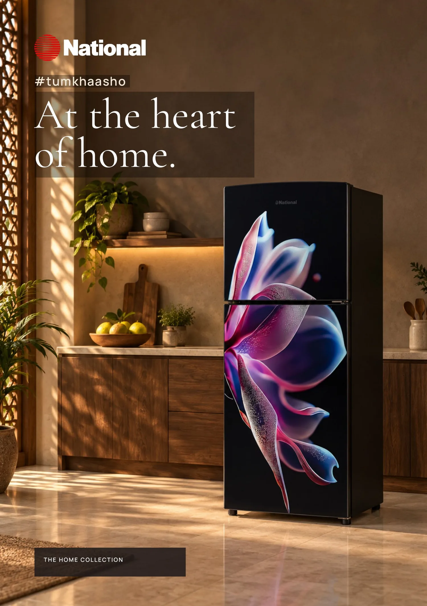

A twelve-page catalogue for National — the Okara-born appliance house that has been building deep freezers since 1992 and refrigerators since 2006.
It is designed to be felt before it is read. The photography stays inside a Pakistani home: light through a carved jaali, mangoes and kheer set out on the table, a mother and daughter packing the week ahead. Then it turns practical — every model carries its litres, its cubic feet and the three details that actually decide a purchase, closing with a four-step buyer's guide for measuring the space and confirming the model code with a retailer.
Pages
12 · A4 portrait
Ranges
Refrigerators · Deep freezers
Featured
NR-6230 · DF-805TR3
Campaign
#tumkhaasho
Reading it: swipe or drag the page sideways, tap the left and right edges, or use the arrow keys. Pinch or double-tap the centre of a page to zoom in, then drag to move around it. Concept sample — selected models shown; confirm specifications with the retailer.

National · Since 1992
At the heart of home.
A twelve-page catalogue for the Okara-born appliance house — refrigerators and deep freezers photographed inside a Pakistani home, then set out model by model with the litres, the cubic feet and the details that decide a purchase.